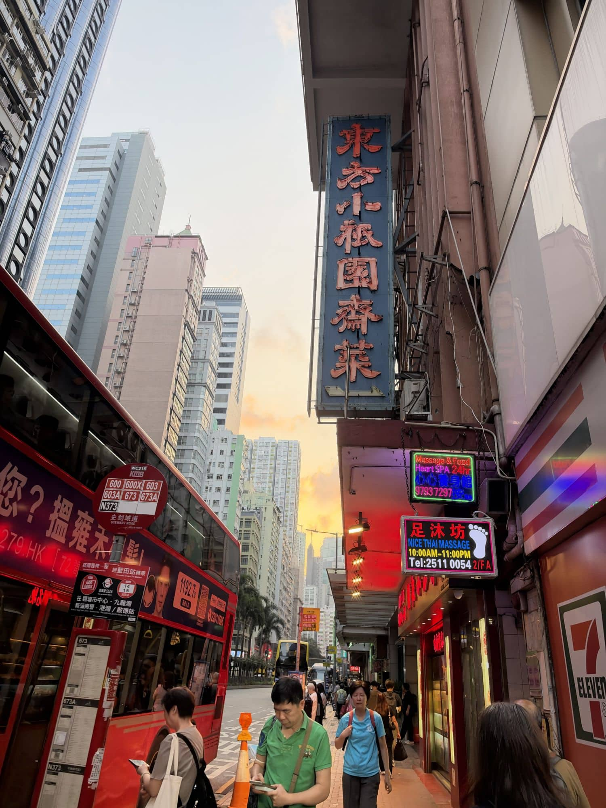
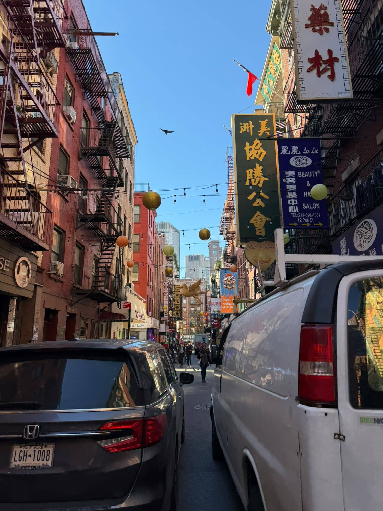

Pell Street


Looking down Pell Street, the block felt narrow and tall at the same time. Red brick walk-ups rose five and six stories on both sides, their black iron fire escapes zigzagging down the fronts like stitches. Strings of round paper lanterns, gold, orange, and pale green, swung on wires stretched across the street, bumping lightly in the breeze. On the right, a long green sign with gold characters read 美洲協勝公會, the Hip Sing Association, and just below it hung a bright orange Knicks banner. A blue salon sign listed "Lee Lee Beauty & Hair Salon" in English and Chinese, with a phone number and three yellow arrows. Pigeons pecked at the asphalt, a white van idled at the curb, and above everything was a clear blue October sky with a single bird gliding over the rooftops. It smelled faintly of cooking oil and exhaust. The street was Chinese in its signs and New York in its bones.